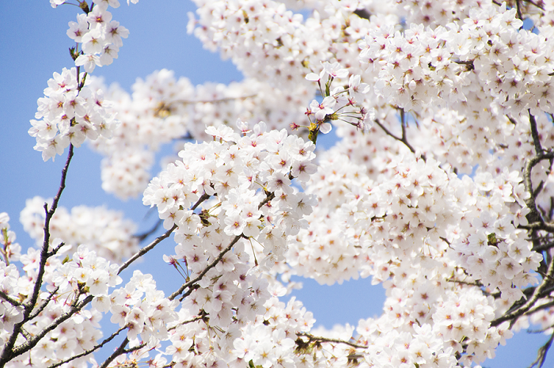
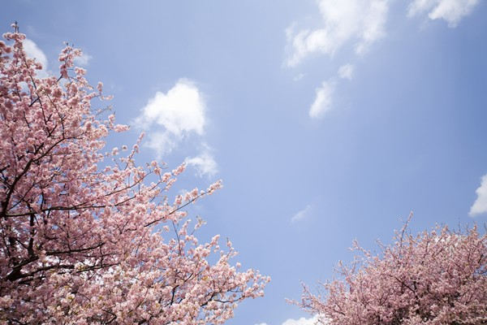
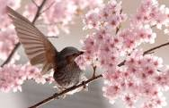

About Portfolio Contact
Kyeongseok Ko_
안녕하세요 고경석입니다.
만나서 반갑습니다. 저는 35살 고경석입니다. 저는 전공을 전자전기공학으로 다녔는데, 지금을 IT업무를 하고 있네요. 지금은 포인트 관련 운영 및 개발 업무를 하고 있습니다. 운영은 어느정도 할 수 있는데, 혼자서 개발을 하는게 쉽지 않네요.
취미
취미는 스포츠관람 입니다. 직관은 잘 못하지만, 주로 집에서 해외축구를 보고 있습니다. 요즘은 친구들과 한 경기를 두고 누가이길지 내기를 하며, 실감나게(?) 스포츠를 즐기고 있습니다!!
웹경험
웹은 처음 국가지원 교육기관에서 배웠습니다. java 부터 spring 프레임웍까지... 근데. 회사에 입사 후 주로 운영업무만 하다보니, 많이 까먹게 되었네요 ㅠ_ㅠ... 이번 스터디 계기로 front end 단 언어들을 개발하는데 자신감 업 되고 싶네요!
PORTFOLIO


